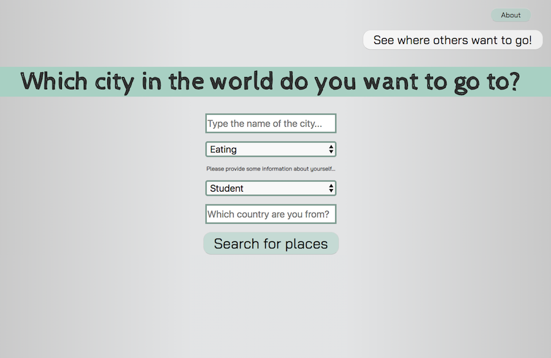
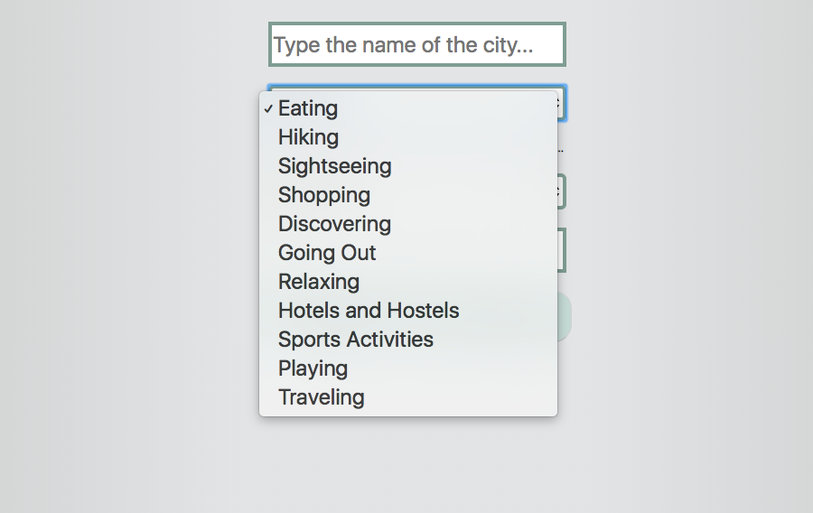
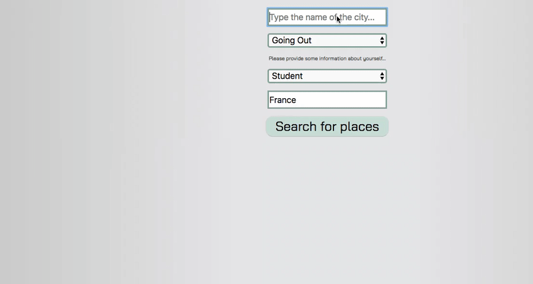
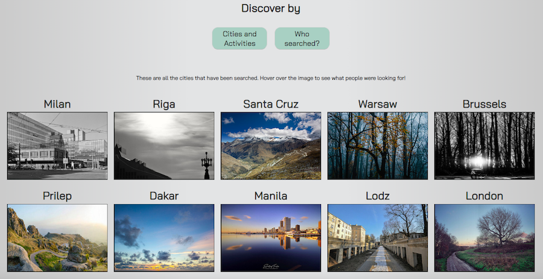

Travel Explore Guide
Single page web application
Website
Travel Explore Guide was a project for Mashups: Creating with Web APIs class at NYU Abu Dhabi. It is a website for traveling recommendations. The user inputs the name of the city and a category of interest.
 The user can choose from 11 categories - eating, hiking, sightseeing, going out, etc. I am using the Sygic Travel API and Open Weather API for acquiring data that is then displayed on the page.
After providing information and hitting Search for Places, suggestions and weather information appears
This project was exhibited in the end of the year Interactive Media Showcase at NYU Abu Dhabi in 2018. For the exhibition purposes, I asked for more input from the user – his or her affiliation as well as home country. I am storing this information in the IBM Cloudant database as well as the city and activity that has been searched.
The user can then explore all the cities that have been looked up as well as discover more details about the searches like how many people searched for a particular city, where they are from and what they were looking for.

More information appears when hovering over the images of the cities
Built with: Underscore.js, Sygic Travel API, Flickr API